Strangelet Press
Print book and ebook production for the literary magazine Strangelet, 2012-2016
Strangelet was a bimonthly literary magazine of fantasy, science fiction, and magical realism. In addition to managing the design and production, I was also a co-founder, the website designer, and art editor.
For Strangelet, I typeset the book in Caslon with the display text as Marta. The title page typeface is Hightower and the cover a combination of typefaces to reflect the tone of the books: strange, bizarre, eerie. We produced bimonthly issues, very short, around 50 to 70 pages each, and combined them in an omnibus at the end of the year.
By setting up the InDesign files myself, we were able to have a streamlined and efficient production process for ebook production.
 Issue 0 was our proof-of-concept. Volume 1 and 2 followed
Issue 0 was our proof-of-concept. Volume 1 and 2 followed
 Issues from volume 1
Issues from volume 1
 Issues from volume 2. During this year, I took over the art acquisition duties
Issues from volume 2. During this year, I took over the art acquisition duties
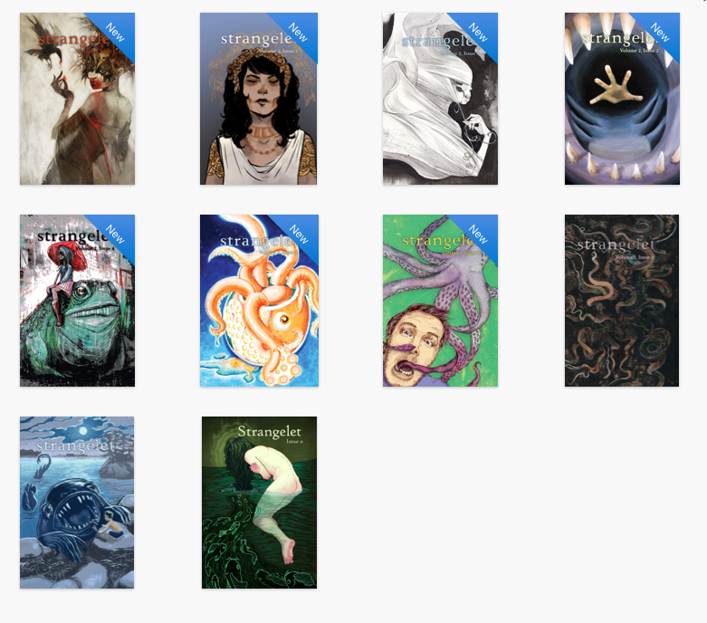 Ebook editions of all of our books, save the omnibuses
 Title page, standard throughout the magazine’s run
Title page, standard throughout the magazine’s run
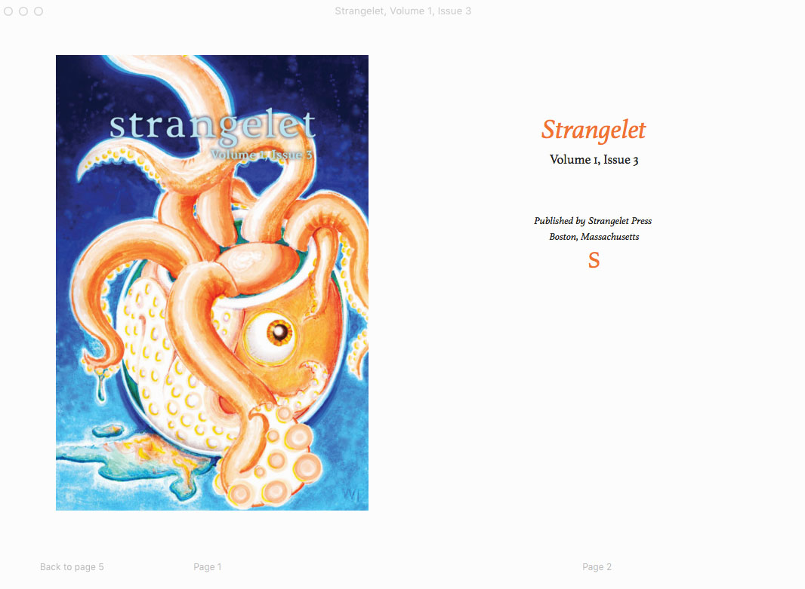 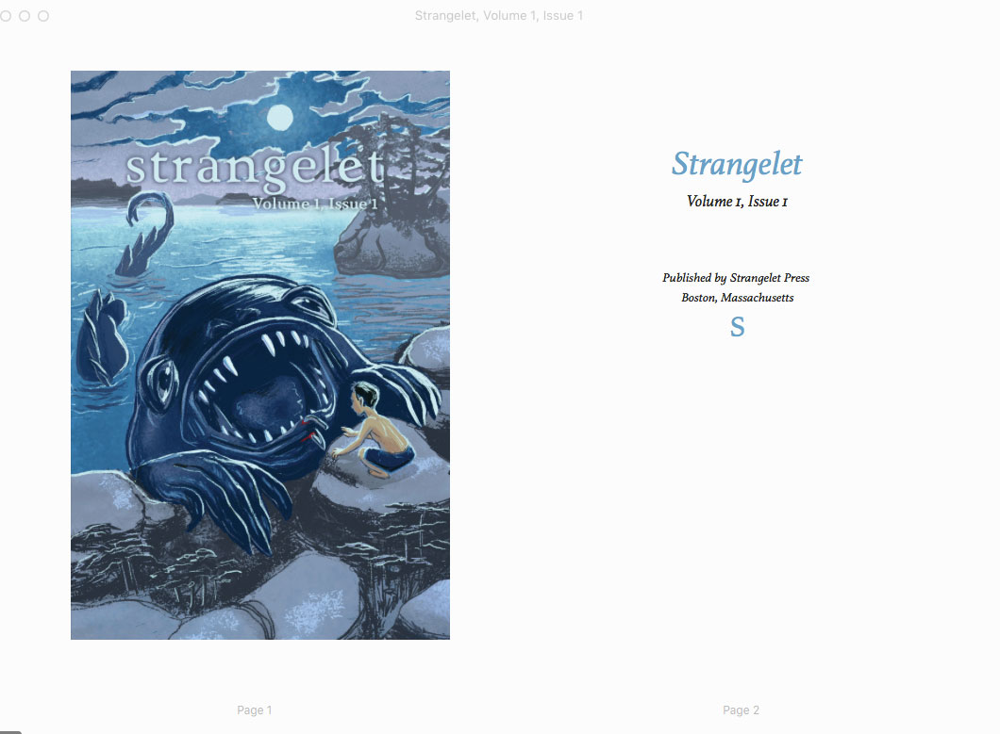 For the ebook edition, I pulled colors from the covers as the link and highlight color.
 Table of contents
Table of contents
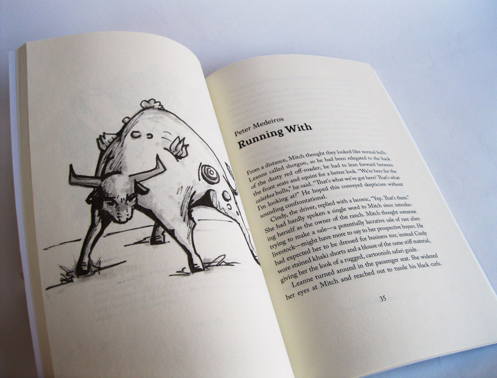 For Vol 1, Issue 4, we had an illustrator create drawings for each of our issues.
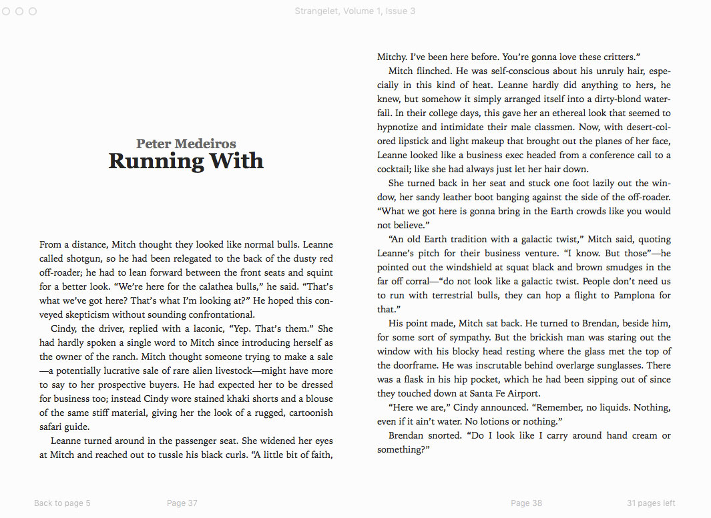 The opener for the same story. The illustration was moved to allow the reader to see the title as the first thing.
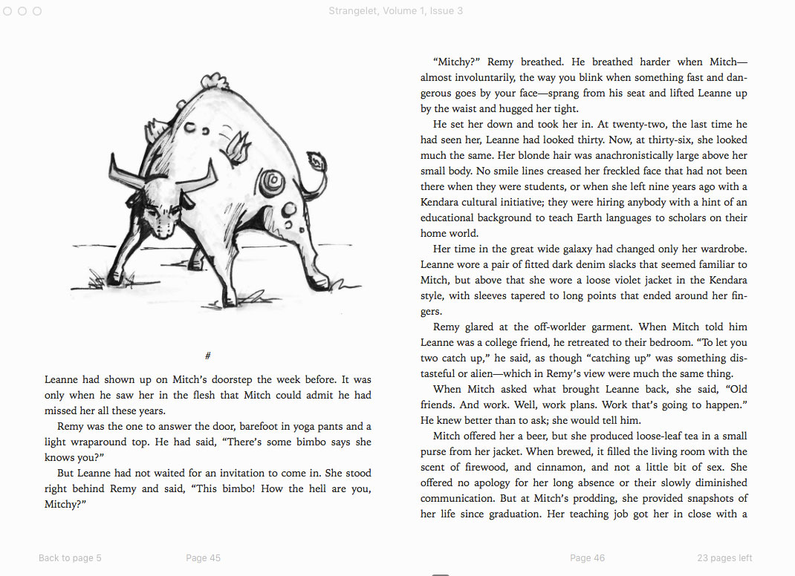 Example of illustration treatment in reflowable ebook
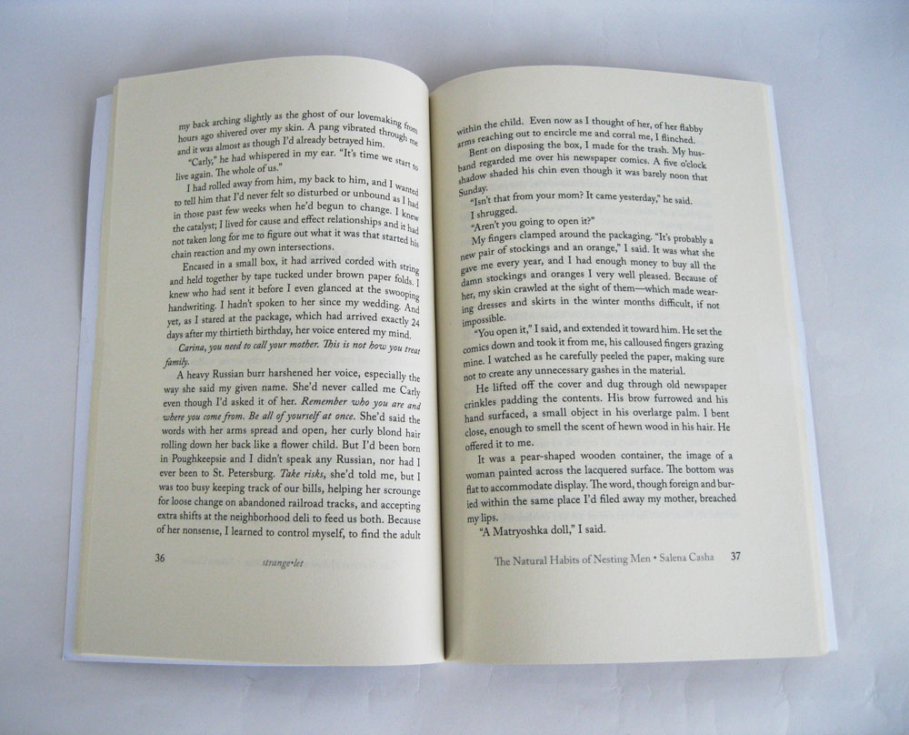 Prose page spread
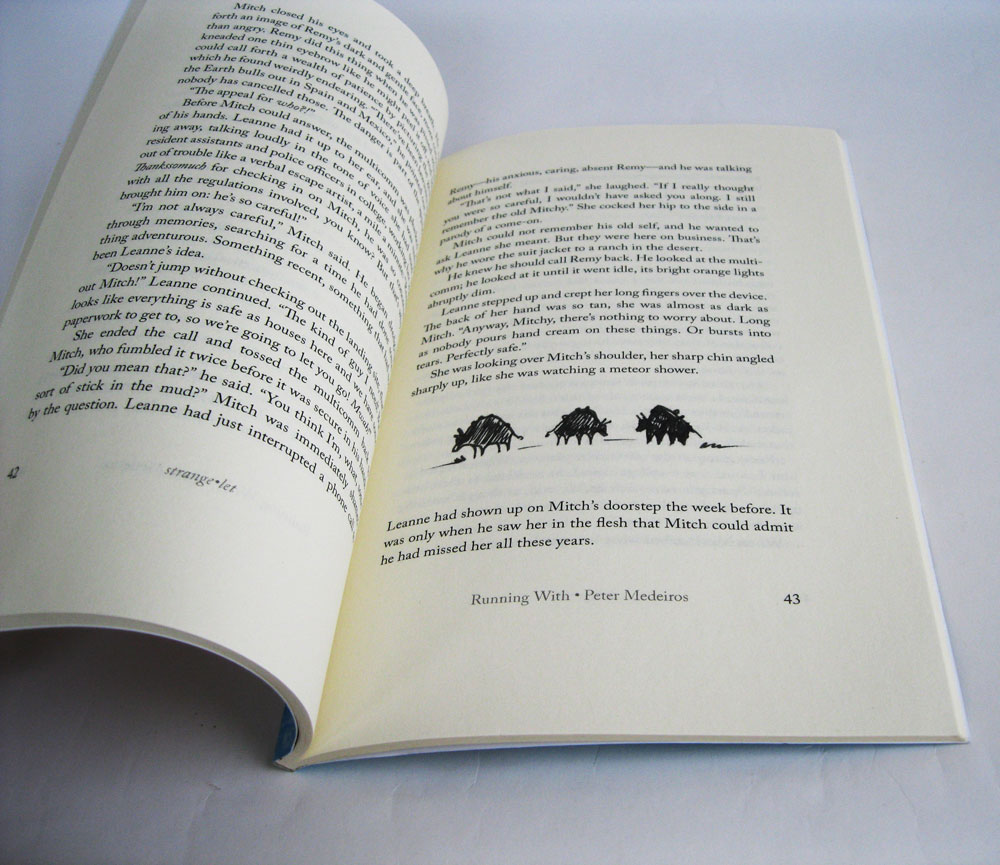 For the story “Running With”, shown above, I used these small sketches as the section breaks.
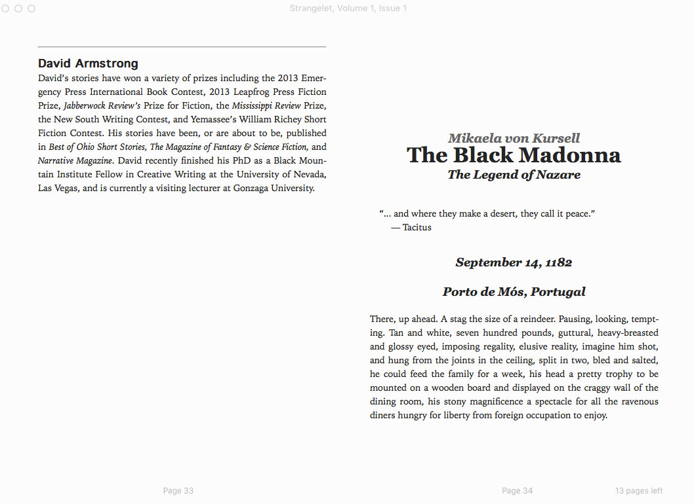 Treatment of the author bio.
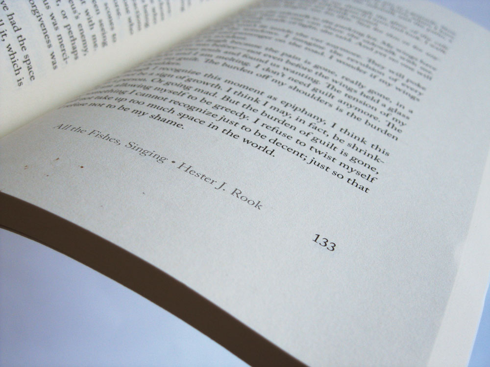 Demonstration of treatment of different text elements in the ebook edition: title, subtitle, author name, sub-sections, epigraphs, and author bio sections. Compare with print versions.
 Running feet detail
Running feet detail
 Poem treatment in print book. Compare with ebook version below.
Poem treatment in print book. Compare with ebook version below.
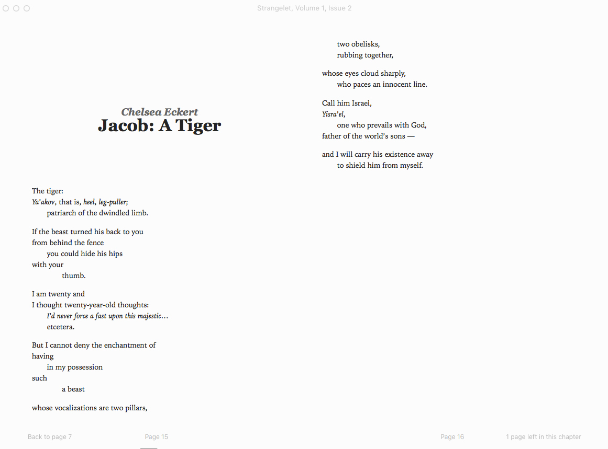 Poem treatment in ebook. Poetry ebooks have long languished as after-thoughts for some publishers.
CSS for poetry below:
1 /*poetry*/
2 p.poem-1 {
3 margin-left:1.5em;
4 text-indent:-1.5em;
5 }
6
7 p.poem-1-ind1-sa {
8 margin-top:1em;
9 margin-left: 3.5em;
10 text-indent:-1.5em;
11 }
12
13 p.poem-1-ind1 {
14 margin-left: 3.5em;
15 text-indent:-1.5em;
16 }
17
18 p.poem-1-ind1-sb {
19 margin-bottom:1em;
20 margin-left: 3.5em;
21 text-indent:-1.5em;
22 }
23
24 p.poem-2 {
25 margin-bottom:1em;
26 margin-left: 1.5em;
27 text-indent:-1.5em;
28 }
29
30 p.poem-2-sa {
31 margin-top:1em;
32 margin-left: 1.5em;
33 text-indent:-1.5em;
34 }
35
36 p.poem-2-ind1-sb {
37 margin-bottom:1em;
38 margin-left: 3.5em;
39 text-indent:-1.5em;
40 }
41
42 p.poem-2-ind2-sb {
43 margin-bottom:1em;
44 margin-left: 5.5em;
45 text-indent:-1.5em;
46 }